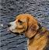

Monsieur Nils est un anarchiste je-m'en-foutiste. Il aime se rouler dans les bouses, courir après ses proies et surtout manger tout ce qui se mange (et même tout ce qui ne se mange pas).
Sa devise: Ni Dieux, ni maimaitre
Prune (de son vrai nom Prunelle) est une imbécile heureuse. Elle croit qu'elle est un petit chat à force de lui avoir répété. Elle aime tout le monde et surtout son maimaitre. Son travaille est d'être une gardienne, donc elle garde tout ce qui bouge et surtout,elle empêche son Nils adoré de voler sa nourriture et celle des humains
Sa devise: Maimaitre est trop beau